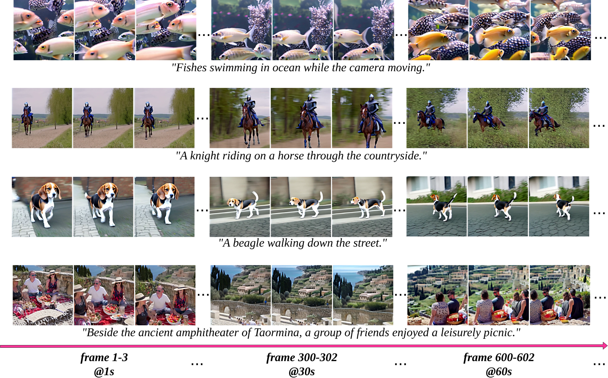

Our method EdgeSR is a cutting-edge super-resolution technology designed to enhance the clarity and detail of images at the edge level. It is adept at processing a wide range of image types, demonstrating its versatility and effectiveness across different content scenarios. Our tests show significant improvements in image quality, with EdgeSR effectively resolving finer textures and details that are often lost in standard methods. This technology is particularly beneficial for applications requiring high-resolution outputs, such as digital photography, medical imaging, and video enhancement. The robustness of EdgeSR is further exemplified by its ability to maintain high image quality even under challenging conditions, making it a reliable tool for professionals and enthusiasts seeking to enhance their visual media.